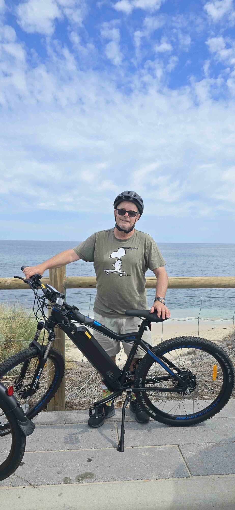

Behind the shutter
Zenergy is one photographer's running record: no studio, no crew, no AI-generated images. Just a camera, whatever light happened to be around that day, and my own imagination and effort.
I'm not a professional photographer and I'm not trying to be. I'm a loose, self-taught beginner, and I'm glad to be one. That isn't an apology. It's the point of the site.

Chasing one moment in time
Nothing here is staged twice. The name Zenergy comes from that instinct — a kind of quiet, focused energy that shows up right before something worth photographing happens. Right when it's meant to happen. The job isn't to create the moment. It's to be ready for it. And then, hopefully, do it some justice.
Most frames are shot handheld, in available light, without a plan beyond "go outside and pay attention."
Imperfect, and perfectly normal
Some of these photographs are sharp and some aren't. Some are a bit crooked and I kept them anyway. I'm not chasing the most brilliant photograph. I'm trying to take good ones, and to make each one belong in the gallery it sits in.
If anyone lands on this page, I'd like them to leave a little easier about their own imperfection. It's normal. Nothing in nature is finished or flawless, and nothing stays as it is. Change is what keeps it all going, and the rough edges are part of how things grow.
That's the foundation under the whole site. It comes mostly from Zen Buddhism: a few plain ideas I keep coming back to.
Nothing lasts. A photograph is one moment of something that has already changed, so no frame is ever really finished, and none of them has to be perfect.
Life never quite matches the picture in our heads, and a lot of our suffering comes from insisting that it should. Chasing the perfect shot is a small version of that, and putting it down is a relief.
Take the picture, then let go of the result. That includes the likes, the praise, and the idea of being a Good Photographer.
Zen treats a beginner's open attention as a gift (shoshin). An expert tends to see what they expect to see; a beginner sees what's there. Being new at this isn't something to apologise for. It's somewhere to look from.
None of this is pure or complete, and I'm borrowing as a student, not teaching. Layered over the Zen are Taoism's yin and yang, Shinto's spirit in all things, Indra's Net (a Buddhist image of everything reflecting everything else), the Japanese ideas of wabi-sabi and mono no aware, Ubuntu from southern Africa, and deep ecology. Not all of it is Buddhist, and it doesn't need to be.
Stopping the windmills
The Windmills of Your Mind is the song behind the circle on this site. It's about a mind that goes round and round: thoughts, memories, half-heard fragments, wheels inside wheels.
The Ensō, the Zen circle brushed in a single breath and left open, is that same circle accepted instead of fought. It doesn't stop the turning. It stops pretending the circle should be perfect.
The camera is how I step out of the spinning for a moment: slow down, notice what's actually in front of me, press the shutter, let go. The photograph is what's left over from paying attention.
If you want to try it, pick one small spot, spend ten minutes there without taking a single picture, then photograph only what you noticed.
Not sorted by date. Sorted like a day.
Sky first, then ground, then whatever's growing out of the ground, then the people walking across it, then the light going out. That's the actual order the galleries run in — not a folder, a shape. Keep going and it starts to make more sense than it sounds.
Five acts, one long exhale
Five acts, told in colour: black to red to green and gold, through the human, to yellow and back to soil. It's also a quiet nod to the black, red and yellow of the Aboriginal flag: the acts open in black, pass through red earth, and settle in the last golden light, in the same spirit as the acknowledgement of Country at the foot of this site. Ensō opens the site and Wabi-Sabi closes it: the circle drawn, and the circle worn. Everything between is one continuous descent, sky to soil.
Every gallery has a job, and a photo earns its place by fitting that job, not by being the best frame I've ever taken. Each gallery opens on a small taste, and the rest of the roll is one click away.
Zen Buddhism — beginning, wholeness. The circle opens in stillness. Before land, before water, before life — just sky, scale, and the instinct to look up. The Ensō begins in one breath and is never fully closed. Shot wide and mostly empty on purpose — before an image can show scale, it has to earn the silence around it.
Ensō — the site's founding symbol. Universe, beginning, wholeness: the circle drawn in one breath, never fully closed.
Skies Above — thunderbolts and lightning; the sky visibly breathing in light and shadow.
Taoism & Yin-Yang. The camera drops to the ground and traces water's entire life story from cloud to sea, the unyielding and the yielding completing each other rather than competing. Slower shutter speeds where the water moves, so the stillness of the rock reads even stiller against it.
Mountains — scale and timelessness; the unmoving foundation the rest of the story is carved into.
Rivers — flow and journey; the yielding path that carves its own way through.
Waterfalls — persistence; water's highest-energy moment, refusing to be stopped.
Coastlines — the shifting frontier, where the sea keeps reshaping the stone.
Shinto Animism & Deep Ecology. Beneath the canopy now, where the hierarchy between grand and small life flattens out completely. Trees, wildflowers, creatures — all of it alive, all of it equal, none of it background. Shot low and close, at the scale the subject actually lives at rather than the scale a person sees it from.
Of Green & Gold — forests and trees; the canopy and the wattle, the ecosystem's own colour story.
Wildflowers — small, delicate, easily missed; quiet miracles that return every year unasked.
Creatures — life at every scale, the smallest organism doing exactly as much work as the largest.
Ubuntu & Indra's Net. From landscape to face — people photographed as part of the same web as the mountain and the wildflower, not as its subject or its master. Every stranger a knot in the same net, reflecting everyone else in it. Shot close, on instinct, without asking anyone to hold still.
Portraits — human faces, connection; brief, quiet bridges between strangers.
Streets — chance and chaos; the cosmic dance playing out in real time on concrete.
Visual Storytelling — deliberate ambiguity; the frame offers no answer, so the viewer finishes the story.
In The Zone / Tathātā — the resting points of this act, where looking becomes noticing without judgement.
Mono no Aware & Wabi-Sabi. Golden hour, night, fungi, and finally the imperfect close — decay folding back into life. Not a triumphant final image, but fading light and a deliberate gap: the part of the site that admits things end, and finds that beautiful rather than sad. Worn, not finished.
Golden Hour — light and time passing; beauty and disappearance as the same event.
Night — dark and dreamlike; the world dissolving into suggestion rather than statement.
Fungi — hidden interconnection; decay building the network that makes new life possible.
Ma (間) — the pause, left empty on purpose: the rest between two notes, the space that lets everything else make sense.
Wabi-Sabi & Kintsugi — the imperfect close; the beautiful flaw that brings the circle home.
Kit notes
What's actually used day to day. The phones are always in the pocket, so plenty of the frames here came from them.
How this started
Phones came first. The oldest frames on this site are from Bali, in 2019.
Picked up a secondhand camera with no real plan for it.
Started shooting as often as I could and keeping every frame, good or bad, hoping to learn as I go
Zenergy goes online — the journal moves from a shoebox to here.